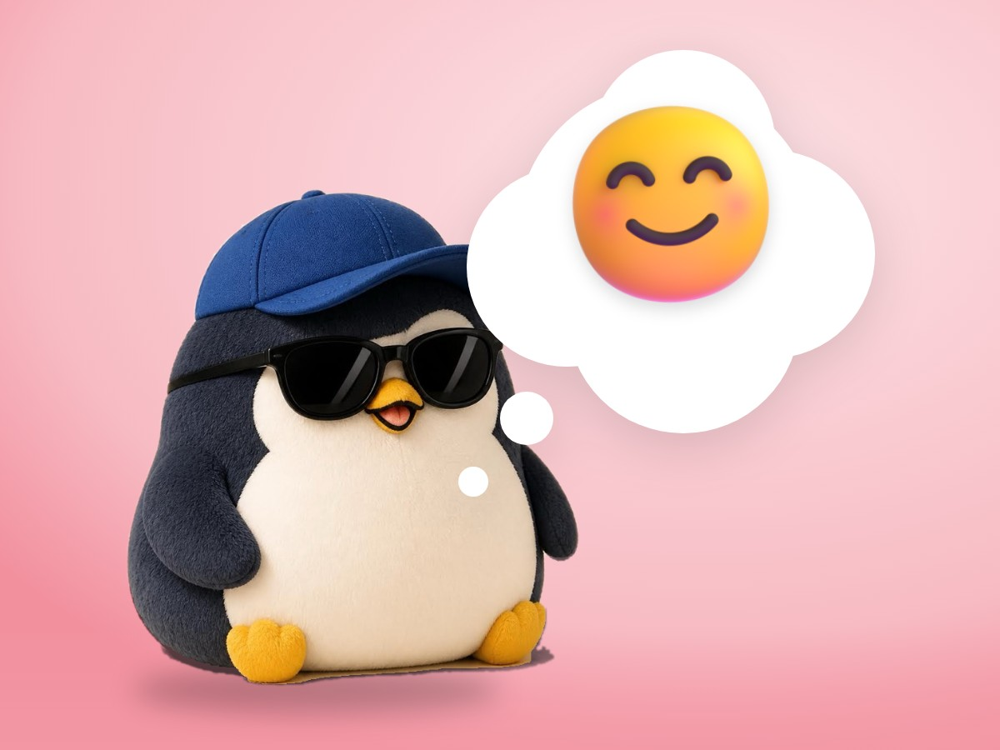

🧪 LAB · 試作 — AIが読書メモから一気に作った記事です。本番の一覧には出していません · 試作の一覧
🐧 EVERYDAY LIFE⚡ 18 SEC
Point your belly at them, move your hands, and smile when you talk 🐧

Three Tips
It seems there are 3 tips for a nice way of talking.
Belly First
1st, point your belly button at the person.
If you talk while looking at a screen, people may feel you are a little cold.
⚡ TRY IT
Turn on the 3 tips
Penguins have big bellies, so tip 1 is easy!
Listener
🥶 "…Are you even talking to me?"
😐 "Hmm. OK."
🙂 "Oh, that sounds fun!"
🥰 "I love talking with you!"
🌡️ How warm the listener feels
🔥 So warm! All 3 tips are on.
Hands and Smile
2nd, move your hands when you talk, and 3rd, smile.
Relax Bonus
Moving your hands also helps you relax, they say.
📚 I learned this from the Japanese blog "Panda no Ondo".